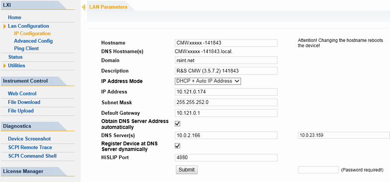

IP Configuration
The "IP configuration" web page displays all mandatory LAN parameters and allows their modification.

The "IP Address Mode" selects a configuration mode for the IP address of the instrument. With static configuration, the entered IP address, subnet mask and default gateway are used. With dynamic configuration, DHCP or dynamic link local addressing (automatic IP) are used to obtain the instrument IP address.